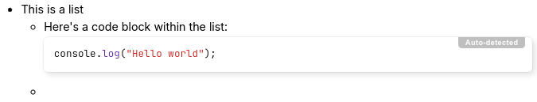
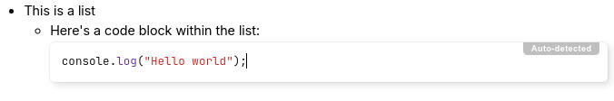

Lists
There are three types of lists supported by text notes:
- Bulleted lists (also known as unordered lists).
- Numbered lists (or ordered lists).
- To-do lists
Keyboard shortcuts
- Bulleted list: Start a line with
*or-followed by a space; - Numbered list: Start a line with
1.or1)followed by a space; - To-do list: Start a line with
[ ]for an unchecked item or[x]for a checked item.
Headings, code blocks within lists
It possible to add content-level blocks such as headings, code blocks, tables within lists, as follows:

|
First, create a list. |
|  | Press Enter to create a new list item. |

|
Press Backspace to get rid of the bullet point. Notice the cursor position. |
|  | At this point, insert any desired block-level item such as a code block. |

|
To continue with a new bullet point, press Enter until the cursor moves to a new blank position. |

|
Press Enter once more to create the new bullet. |
The same principle applies to all three list types (bullet, numbered and to-do).